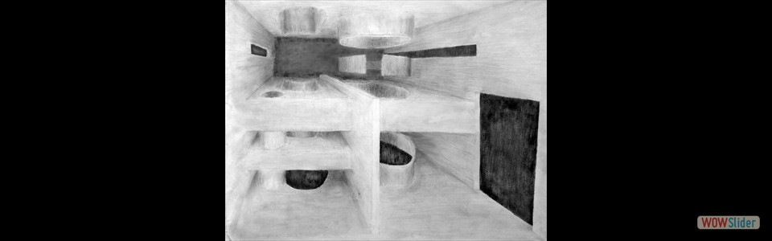
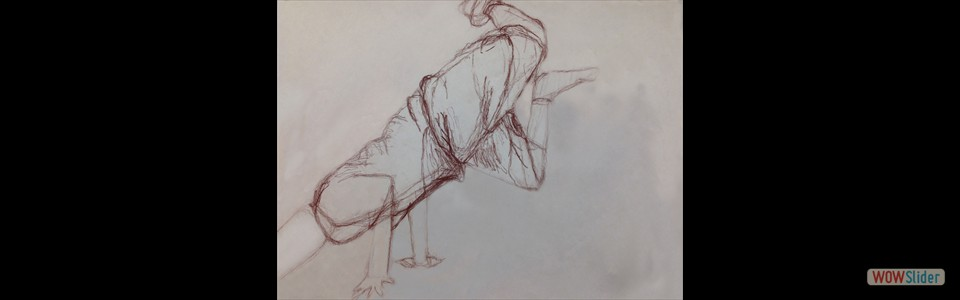
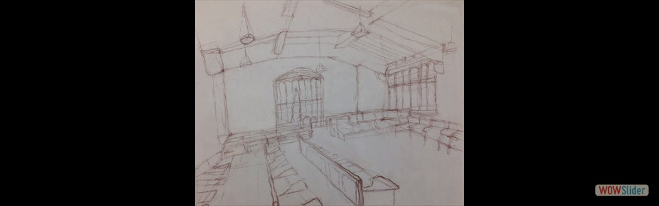
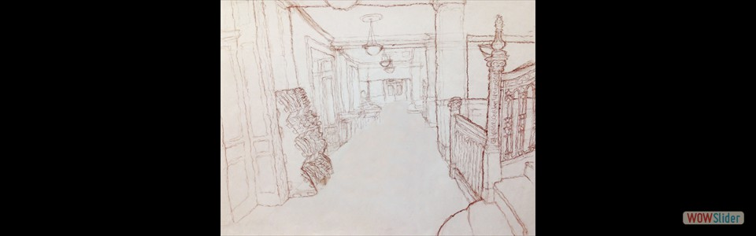

Year I: Fall 2016 - Spring 2017
Year II: Fall 2017 - Spring 2018
Year III: Fall 2018 - Spring 2019
Year IV: Fall 2019 - Spring 2020
Year V: Fall 2020 - Spring 2021
Graduate Years: Fall 2021 - Spring 2023
48-100: Studio
- Drawn on August 30,2016
- Drawn on August 30, 2016
- Drawn on August 30, 2016
- Drawn on August 30, 2016
- Drawn in Pencil; October 3, 2016
- Drawn in Pencil; October 3, 2016
- Drawn in Pencil; October 3, 2016
- Drawn in Pencil; October 3, 2016
- Drawn on October 7, 2016 College of Fine Arts, CMU
- Drawn on October 7, 2016 College of Fine Arts, CMU
- Drawn on October 7, 2016 College of Fine Arts, CMU
- Drawn in Pencil; October 10, 2016
- Drawn in Charcoal; October 17, 2016
- Drawn on September 2, 2016 Margaret Morrison Carnegie Hall, CMU
- Drawn on September 2, 2016 College of Fine Arts, CMU
- Drawn on September 6, 2016
- Drawn on September 6, 2016
- Drawn on September 6, 2016
- Drawn on September 9, 2016
- Drawn on September 9, 2016 Gates Hillman Center, CMU
- Drawn on September 10, 2016 College of Fine Arts, CMU
- Drawn on September 10, 2016 Margaret Morrison Carnegie Hall, CMU
- Drawn in conti, September 12, 2016
- Drawn on September 16, 2016 Carnegie Museum of Natural History
- Drawn in pencil; September, 18, 2016
- Drawn in pencil; September 25, 2016
- Drawn in pencil; September 25, 2016
- September 5, 2016 Outside Margaret Morrison Carnegei Hall, CMU
 September 5, 2016
Point Breeze, Pittsburgh
September 5, 2016
Point Breeze, Pittsburgh- September 5, 2016 Outside Gates Hillman Center, CMU
- September 5, 2016 Hamerschlag House, CMU
- September 5, 2016 Margaret Morrison Carnegei Hall, CMU
 15
15bootstrap slider by WOWSlider.com v8.7
48-100: Studio Sketches
bootstrap carousel by WOWSlider.com v8.7
48-100: Cube House Concepts
bootstrap slider by WOWSlider.com v8.7
48-100: Cube House Drawings and Models
 Taken through the "South side" of the site
Drafted in pencil
Taken through the "South side" of the site
Drafted in pencilbootstrap slider by WOWSlider.com v8.7
48-120: Knee Residence Study
- Drafted in pencil. Illusrated from north side of building
- Drafted in pencil. Illustrated from north side of building.
- Drafted in pencil.
- Drafted in pencil.
- Strathmore, cardboard, and chipboard model. Partnered with two colleagues (Harrison Branch-Shaw and Christoph Eckrich) to construct.
- Strathmore, cardboard, and chipboard model.
bootstrap slider by WOWSlider.com v8.7
48-120: Digital Media
- First class Adobe Photoshop experimentation
- Based on template. Edited via Adobe Illustrator.
- Based on template. Created via Rhinoceros.
- Based on Le Corbusier's 1914 Domino House concept. Created via Rhinoceros
- Model made in Rhinoceros. Rendering and editing made via Adobe Photoshop.
- Based on Analog Media study of Knee Residence. Created via Adobe Photoshop.
bootstrap slider by WOWSlider.com v8.7
48-105: Car Crank - Project 1
- Principle subject for movement, physicality, and design for Project 1 Final Model
- Secondary subject for Project 1 Final Model

- To study the tool's physicality
- To measure the tool's movement and capacity
- Based on Initial Motion Crank Drawing
- Based on Initial Motion Crank Drawing
- Based on Initial Section Drawing 1
- Based on Initial Section Drawing 2
- Provided by partner Michael Longo
- Based on previous drawing
 12
12bootstrap slider by WOWSlider.com v8.7
48-105: CMU Hunt Library Transformation - Project 2 (Underway)
bootstrap slider by WOWSlider.com v8.7
48-125: Analog Media
- Drawn in pencil. Carnegie Museum of Art
- Drawn in pencil. College of Fine Arts, CMU
- Drawn in pencil. Purnell Center of the Arts, CMU
- Drawn in black and white pencil on gray charcoal paper. College of Fine Arts, CMU
- Drawn in black and white pencil on gray charcoal paper. College of Fine Arts Facade, CMU
- College of Fine Arts, CMU
- College of Fine Arts Statue, CMU
- Plant, CMU
- College of Fine Arts Facade, CMU
- Margaret Morrison Carnegie Hall, CMU
- Baker Hall, CMU
- Baker Hall, CMU
- Gates Hillman Center, CMU
- Gates Hillman Center, CMU
 13
13wowslider.com by WOWSlider.com v8.7
48-125: Digital Media
- Made via Rhinoceros, Adobe Illustrator, and Adobe InDesign.
- Made via Rhinoceros, Adobe Illustrator, and Adobe InDesign.
- Made via Rhinoceros
- Made via Rhinoceros and Modelo
- Made via Rhinoceros
- Made via Rhinoceros and V-Ray rendering. Cohon University Center, CMU
- Made via Rhinoceros, V-Ray, and Adobe Photoshop
- Made via Rhinoceros and V-Ray rendering
- Made via AutoCAD
wowslider.com by WOWSlider.com v8.7